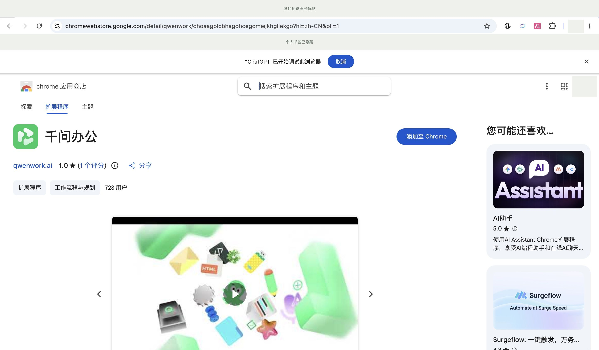
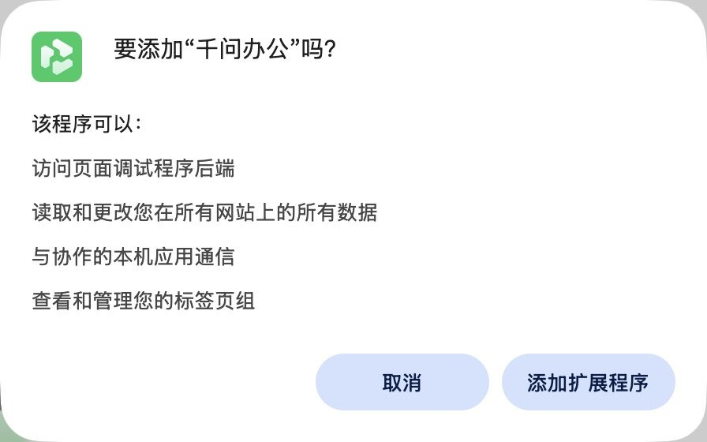
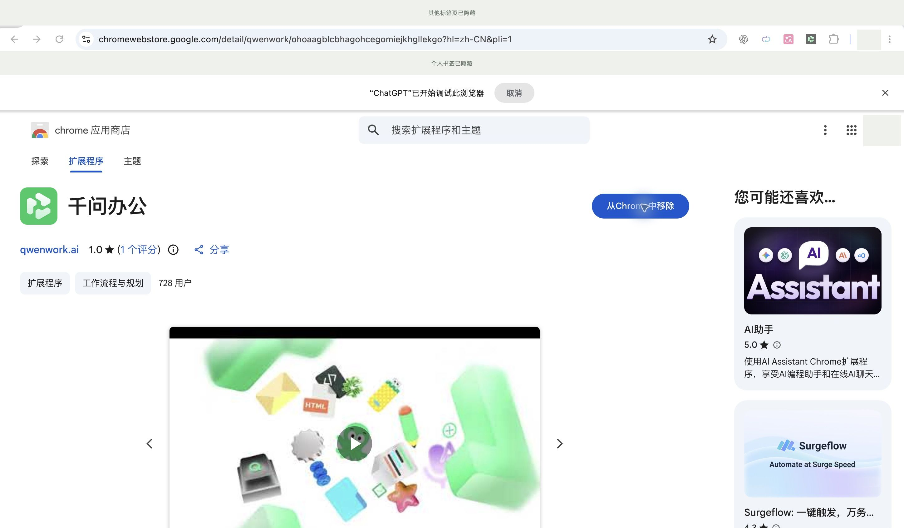

本课件是操作演示。截图上的点击仅切换课件，不会控制你的电脑。← / → 切换步骤 · 空格播放 / 暂停 · F 全屏
连接完成后，先用公开网页做一次小测试。
请使用浏览器连接器读取已连接的 https://example.com 标签页，告诉我页面标题和页面第一段英文原文。只读取这个公开页面，不操作其他标签页，不使用命令行或网络抓取代替浏览器连接器。
这是本课实际发送的验证提示词；实际执行结果以你的千问办公界面为准。
本课主流程按千问办公提供的本地扩展，用开发者模式加载。若你选择商店方式，可按下面三步操作；两种方式任选一种，不要重复安装同名扩展。


